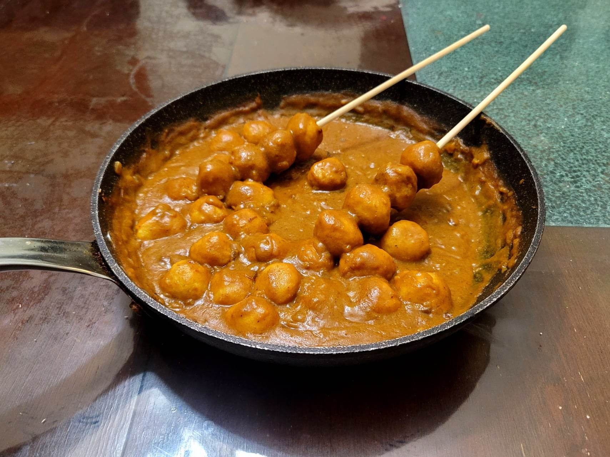

Hong Kong Curry Fish Balls

Ingredients:
- 14 oz Fried fish balls, about 2 7oz packs
- 3 tbsp Canola oil, divided
- 5 Shallots, minced
- 2 oz Thai yellow curry paste
- 2 cups Chicken stock
- 1/3 cup Coconut milk
- 3 tbsp Curry powder
- 1 tbsp Soy sauce
- 1/8 tsp White pepper
- 1/8 tsp black pepper
- 1/4 tsp Sugar
Instructions:
- Heat 2 tbsp oil in a large pan over medium-high heat. Sauté until starting to brown, 7-11 minutes. Then move the shallots to the side of the pan and add the remaining tbsp oil along with the curry paste to the center of the pan. Sauté the curry paste until fragrant, about 1 minute.
- Slowly stir in the chicken stock until fully incorporated. Then bring to a boil and let thicken for a minute or two.
- Add in the rest of the ingredients except for the fish balls and mix to combine. Then add in the fish balls. Let simmer for about 10 minutes or until thickened to preference and the fish balls are warmed through.
- Serve immediately in the pan or on skewers.